BLUES
| Photo |
Name |
Number |
Position |
Shot |
Height |
Weight |
Birthday |
Hometown |
|
Ivan Barbashev |
49 |
C |
L |
6' 0" |
187 |
Dec 14, 1995 |
Moscow, RUS |
| 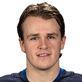 |
Sammy Blais |
9 |
LW |
L |
6' 2" |
205 |
Jun 17, 1996 |
Montmagny, QC, CAN |
| 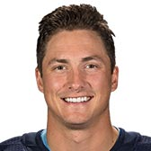 |
Tyler Bozak |
21 |
C |
R |
6' 1" |
199 |
Mar 19, 1986 |
Regina, SK, CAN |
| 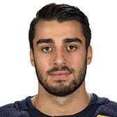 |
Robby Fabbri |
15 |
C |
L |
5' 10" |
190 |
Jan 22, 1996 |
Mississauga, ON, CAN |
| 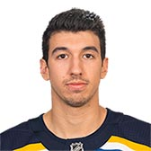 |
Jordan Kyrou |
33 |
C |
R |
6' 0" |
175 |
May 05, 1998 |
Toronto, ON, CAN |
|
MacKenzie MacEachern |
62 |
LW |
L |
6' 2" |
190 |
Mar 09, 1994 |
Bloomfield Hills, MI, USA |
| 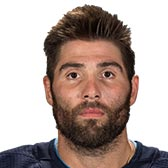 |
Pat Maroon |
7 |
LW |
L |
6' 3" |
225 |
Apr 23, 1988 |
St. Louis, MO, USA |
| 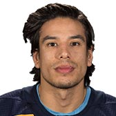 |
Jordan Nolan |
71 |
C |
L |
6' 3" |
219 |
Jun 23, 1989 |
Garden River, First Nations, ON, CAN |
 |
Ryan O'Reilly |
90 |
C |
L |
6' 1" |
216 |
Feb 7, 1991 |
Clinton, ON, CAN |
|
David Perron |
57 |
LW |
R |
6' 0" |
200 |
May 28, 1988 |
Sherbrooke, QC, CAN |
|
Zach Sanford |
12 |
LW |
L |
6' 4" |
207 |
Nov 9, 1994 |
Salem, MA, USA |
| 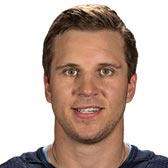 |
Brayden Schenn |
10 |
C |
L |
6' 1" |
200 |
Aug 22, 1991 |
Saskatoon, SK, CAN |
|
Jaden Schwartz |
17 |
LW |
L |
5' 10" |
190 |
Jun 25, 1992 |
Wilcox, SK, CAN |
| 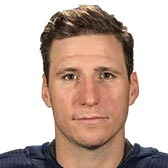 |
Alexander Steen |
20 |
LW |
L |
6' 0" |
211 |
Mar 1, 1984 |
Winnipeg, MB, CAN |
| 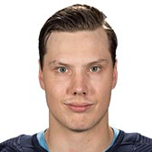 |
Oskar Sundqvist |
70 |
C |
R |
6' 3" |
209 |
Mar 23, 1994 |
Boden, SWE |
|
Vladimir Tarasenko |
91 |
RW |
L |
6' 0" |
225 |
Dec 13, 1991 |
Yaroslavl, RUS |
| 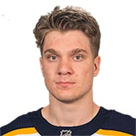 |
Robert Thomas |
18 |
C |
R |
6' 0" |
188 |
Jul 2, 1999 |
Aurora, ON, CAN |
| Photo |
Name |
Number |
Shot |
Height |
Weight |
Birthday |
Hometown |
|
Robert Bortuzzo |
41 |
R |
6' 4" |
216 |
Mar 18, 1989 |
Thunder Bay, ON, CAN |
| 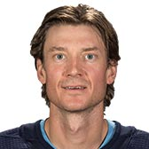 |
Jay Bouwmeester |
19 |
L |
6' 4" |
206 |
Sep 27, 1983 |
Edmonton, AB, CAN |
| 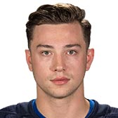 |
Vince Dunn |
29 |
L |
6' 0" |
203 |
Oct 29, 1996 |
Mississauga, ON, CAN |
|
Joel Edmundson |
6 |
L |
6' 4" |
215 |
Jun 28, 1993 |
Brandon, MB, CAN |
| 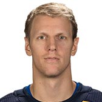 |
Carl Gunnarsson |
4 |
L |
6' 2" |
198 |
Nov 9, 1986 |
Orebro, SWE |
| 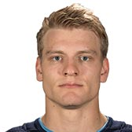 |
Colton Parayko |
55 |
R |
6' 6" |
230 |
May 12, 1993 |
St. Albert, AB, CAN |
|
Alex Pietrangelo |
27 |
R |
6' 3" |
210 |
Jan 18, 1990 |
King City, ON, CAN |
| Photo |
Name |
Number |
Height |
Weight |
Birthday |
Hometown |
|
Jake Allen |
34 |
6' 2" |
203 |
Aug 7, 1990 |
Fredericton, NB, CAN |
| 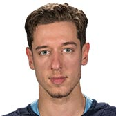 |
Jordan Binnington |
50 |
6' 1" |
174 |
Jul 11, 1993 |
Richmond Hill, ON, CAN |